Wave Physics with LIGO data
Learn about sources from their signals
Sources and signals
Key ideas:
- Waves are traveling signals
- Sources with high frequency motion prouduce high frequency signals
- In astronomy, we learn about the sources (stars and black holes!) by studying their signals (light and gravitational waves!)
Sound Waves
Lower pitch sounds have longer wavelengths. Musical instruments are designed to resonate with the pitches they produce, meaning that the music from the instrument have wavelengths that match the length of the instrument. This is why larger instruments have lower sounds. You can often hear something similar in animals: larger animals tend to make lower pitch sounds.Low Frequency
Long Wavelength
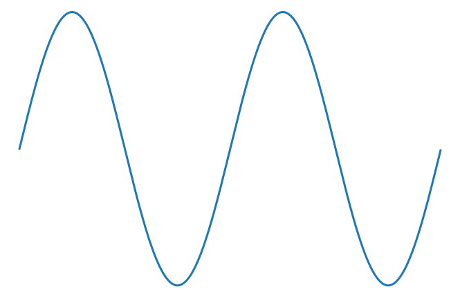High Frequency
Short Wavelength
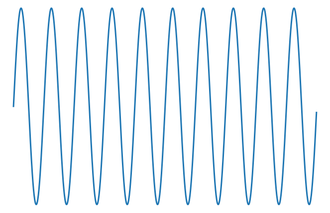Low Frequency

High Frequency
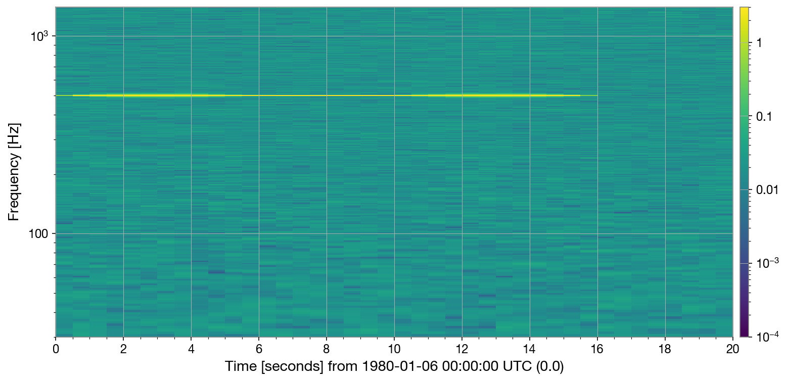Long wavelegnth sound: large source
Short wavelength sound: small source

Long wavelegnth sound: large source
Short wavelength sound: small source
Low Pitch
High Pitch
Long wavelength sound: large source
Short wavelength sound: small source

Light
The colors we see in visible light correspond to different frequencies of electromagentic waves. Rainbows sort light from the lowest frequency we can see (red) to the highest frequencies we can see (blue or violet).Light from "thermal radiation" reveals the temerature of the source. The frequency of the light tells us about the motion of the electrons in the source: the hotter the source, the faster the electrons are moving, and so the higher the frequency of light that's emitted.
Low Frequency: Red Light
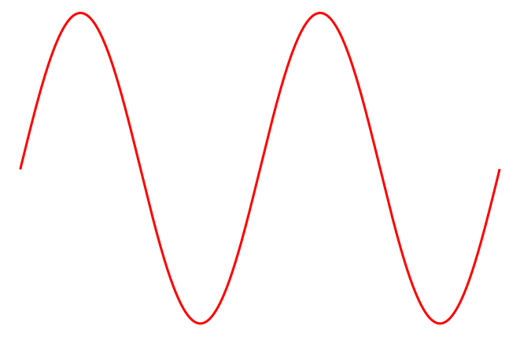High Frequency: Blue Light
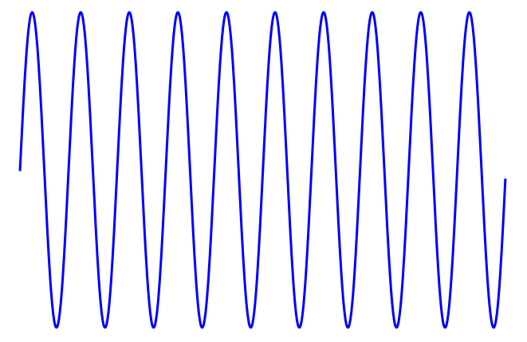Cooler sources makes red light
Hotter sources makes blue Light
Cooler stars make red light
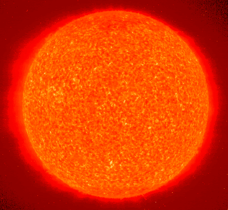Hotter stars make blue Light
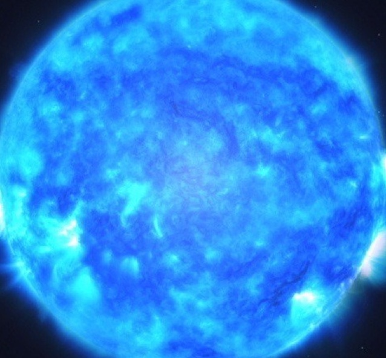Gravitational Waves
Larger black holes orbit at lower frequencies.Smaller black holes obrit at higher frequencies.
We can measure the mass of the black hole by the frequency of the gravitational-wave signal.
Larger black holes
merge at lower frequencies
Longer wavelength
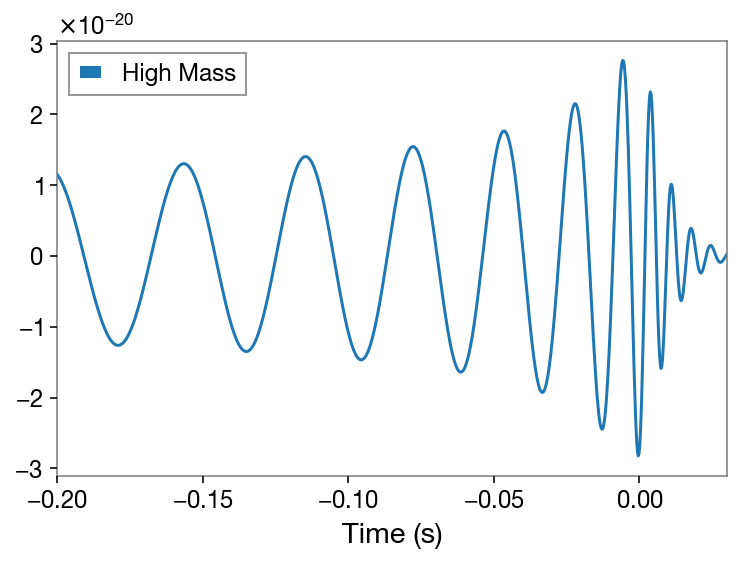Lower Frequency
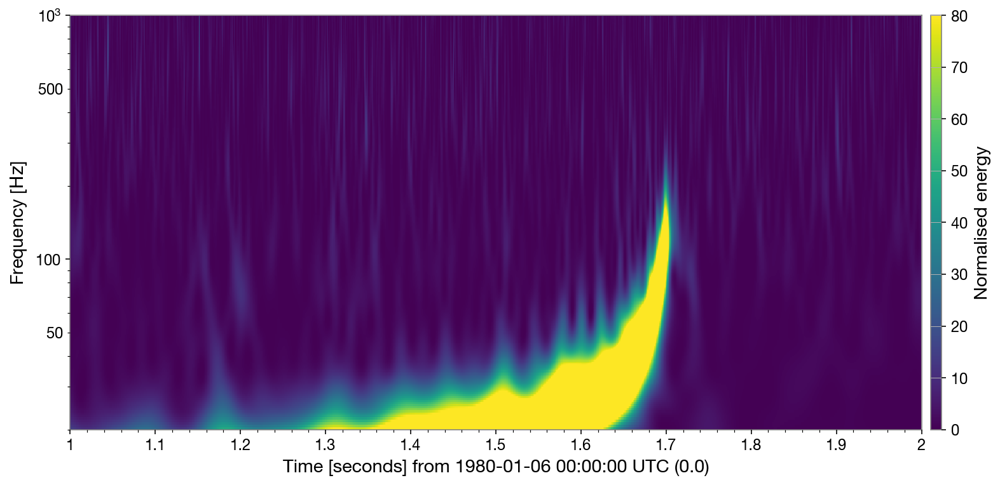Smaller black holes
merge at higher frequencies
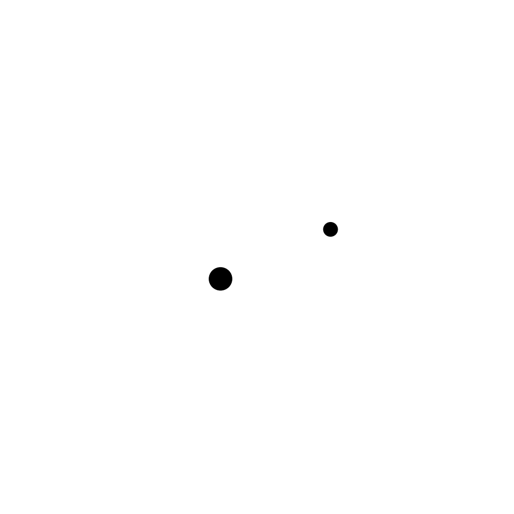 Shorter wavelength
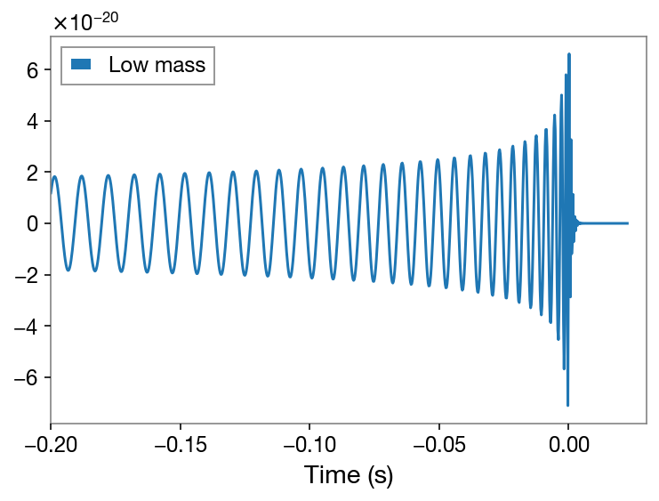Higher frequency
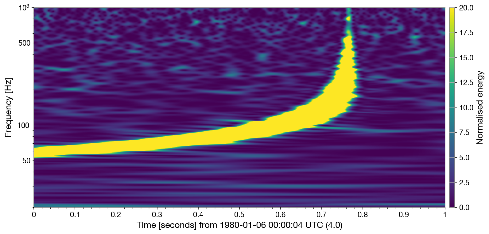Got the idea?
Try it!Contact: gwosc@igwn.org
Image / Audio sources
https://www.southamptonmusichub.org/news/2018/2/7/national-success-for-two-of-southamptons-gifted-young-musicianshttps://commons.wikimedia.org/wiki/File:Man_in_uniform_playing_piccolo.jpg
http://www.krugerpark.co.za/africa_lion.html
https://www.bluecross.org.uk/pet-advice/caring-your-kitten
https://www.chicagoreader.com/chicago/dcomposed-chamber-black-classical-string-quartet-family-dcompressed/Content?oid=78423193
https://www.thestrad.com/double-bassist-leon-bosch-on-avoiding-back-and-finger-injuries/1921.article
https://www.physicscentral.com/experiment/askaphysicist/physics-answer.cfm?uid=20080502092418
https://www.labroots.com/trending/space/14884/blue-supergiant-stars-twinkle
http://cse.ssl.berkeley.edu/bmendez/ay10/2000/cycle/redgiant.html
https://git.ligo.org/zoheyr-doctor/twirl
https://philharmonia.co.uk/resources/sound-samples/
https://freewavesamples.com/lion-roar